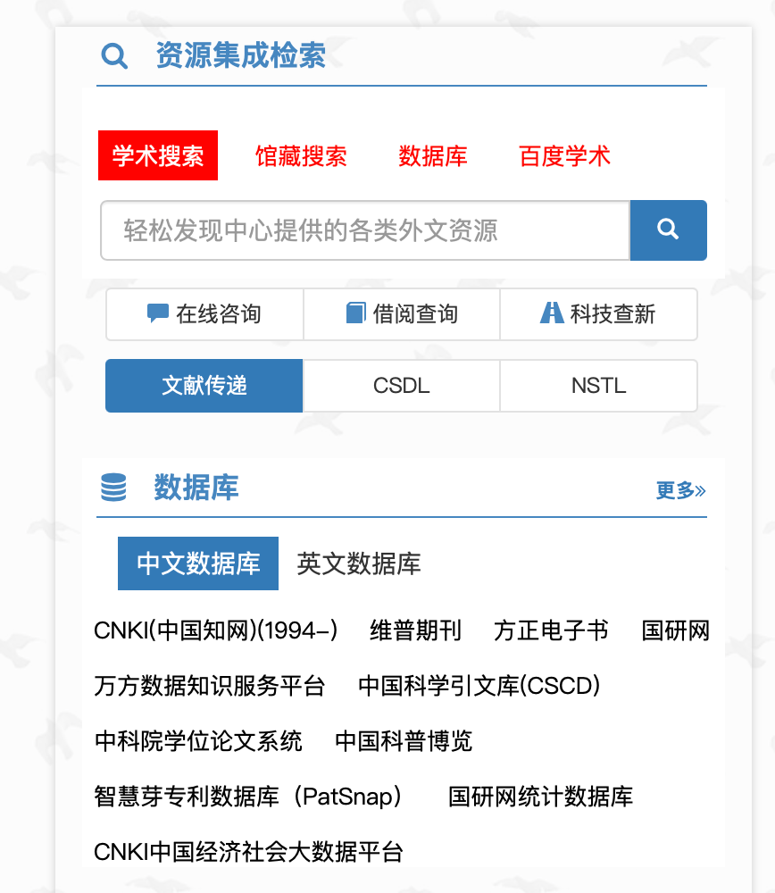

Chapter 8 科研资源
8.2 图书馆
中国科学院兰州分院的图书馆位于园区西大门旁边的中国科学院情报中心一楼，可以自习、看书、借阅图书。具体时间表和借阅政策请到图书馆咨询。
甘肃省省图书馆距离研究所只需10分钟走路距离，请查阅地图。
8.3 文献下载
- CNKI https://www.cnki.net。只要使用单位的IP，自动具有在CNKI下载文献的权限。
- 中国科学院兰州文献情报中心 http://www.llas.cas.cn。多个中文和英文文献下载入口。

外文数据库

中文数据库
8.4 数据
绝大部分我们使用的数据已经可以从网上公开渠道获取，利用搜索引擎即可找到下载入口。 很多数据存放于各大数据中心，我们列举一部分常用的数据中心。
- 国家冰川冻土沙漠数据中心 http://www.ncdc.ac.cn
- 国家青藏高原科学数据中心 http://www.tpdc.ac.cn
- 资源环境科学与数据中心 https://www.resdc.cn
- NASA Earth Observation Data https://www.earthdata.nasa.gov
- USGS EarthExplorer https://earthexplorer.usgs.gov
- World Climate Research Programme, CMIP6 data https://esgf-node.llnl.gov/projects/cmip6/
- World Soil Information https://www.isric.org
- USDA Web Soil Survey https://websoilsurvey.sc.egov.usda.gov/App/HomePage.htm
- FAO Soil Portal https://www.fao.org/soils-portal/data-hub/soil-maps-and-databases/en/
- MERIT Hydro: global hydrography datasets http://hydro.iis.u-tokyo.ac.jp/~yamadai/MERIT_Hydro/
- MERIT-Basins https://www.reachhydro.org/home/params/merit-basins
- National Hydrography Dataset (NHD) https://www.usgs.gov/national-hydrography/national-hydrography-dataset
- HydroSHEDS https://www.hydrosheds.org/